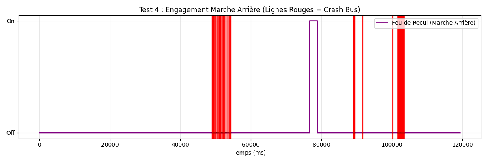

UFR Sciences et Technologies - Université Évry Paris-Saclay
Cours : Culture Métiers - L. NEHAOUA - 2025-2026
Le diagnostic a été réalisé sur le banc Leybold reproduisant le réseau habitacle d'une Audi A3 de 2007.
La capture CAN a été effectuée avec l'outil PCAN-View et sauvegardée au format .trc, puis en fichier .txt pour réussir a décoder les trames.
Le fichier analysé (Test4) a étét enregistré le 24/02/2026.
L'analyse des trames a été réalisée par un script Python utilisant les bibliothèques
pandas, struct et matplotlib.
L'analyse de la capture révèle les identifiants CAN suivants actifs sur le bus :
| ID CAN (hex) | Occurrences | Calculateur probable | Période (ms) |
|---|---|---|---|
| 0x00C2 | 13 973 | ECU Moteur | ~10 |
| 0x0320 | 6 990 | Calculateur ABS/ESP | ~20 |
| 0x05A0 | 6 987 | Module Volant / Colonne de Direction | ~20 |
| 0x0050 | 6 987 | Tableau de Bord (Instrument Cluster) | ~20 |
| 0x04A8 | 6 986 | Boîte de Vitesses Automatique | ~20 |
| 0x04A0 | 6 986 | Transmission / Différentiel | ~20 |
| 0x01A0 | 6 986 | Module ABS - Capteur Pédale Frein | ~20 |
| 0x05D0 | 1 398 | Module Climatisation / Confort | ~100 |
| 0x0390 | 1 398 | BCM - Body Control Module (J519) | ~100 |
| 0x0572 | 1 395 | Gateway / Passerelle réseau | ~100 |
| 0x0550 | 699 | Module Portes | ~200 |
| 0x0520 | 699 | Module Portes Arrière | ~200 |
| 0x0420 | 699 | Module Sièges / Confort | ~200 |
| 0x05F2 | 279 | Module Diagnostic | ~500 |
| 0x05D2 | 140 | Module Antivol / Immobiliseur | ~1000 |
Observation : Tous les calculateurs émettent des trames de type DT (Data).
Aucune trame de type ER, EC ou ST n'est présente dans ce fichier,
ce qui signifie que les erreurs matérielles ne sont pas remontées explicitement par PCAN-View
dans cette configuration. Les défauts sont donc identifiés par analyse comportementale
(silences, transitions anormales) et non par codes d'erreur directement.
Les zones de forte densité de trames visibles sur les graphiques (zones rouges) ne correspondent pas à une rupture du bus CAN, mais à un défaut d'alimentation du véhicule. Le phénomène observé est un tic de relais : la batterie du banc étant en état limite de charge, le relais principal tente de se réenclencher de façon répétitive. Chaque tentative de réalimentation provoque une micro-coupure puis un redémarrage immédiat des calculateurs, générant une rafale dense de trames sur le bus CAN.
Comportement observé : Sur les graphiques générés (voir Section 7), les zones colorées en rouge représentent ces périodes d'instabilité. Deux événements distincts sont identifiables :
Cause identifiée : Alimentation par le générateur du banc causant un disfocntionnement 12V simulée. Le relais principal oscille entre ouvert et fermé, coupant et rétablissant l'alimentation des calculateurs de manière répétée.
Comportement réseau : À chaque micro-coupure, tous les calculateurs perdent leur alimentation simultanément. Au rétablissement, ils exécutent leur séquence d'initialisation et reprennent leur émission CAN. Ce phénomène est visible comme une "salve" de trames dans PCAN-View : tous les ECU émettent leurs trames de démarrage en même temps, créant une congestion momentanée du bus.
Correction : Remplacer le générateur du banc par une version plus robuste. Vérifier la tension d'alimentation avec un multimètre avant toute capture : elle doit être stable entre 12,0 V et 12,6 V. Un condensateur de filtrage peut également être ajouté sur l'alimentation pour amortir les chutes de tension transitoires.
L'analyse comparée de la trame 0x0390 (BCM, output feux stop) et de la trame 0x01A0 (ABS, capteur pédale physique) révèle une incohérence :
Analyse technique : Ce comportement peut avoir deux origines :
0x40 sur l'octet 4) est partiellement
incorrect pour cette version du BCM (J519) installé sur le banc Leybold.
La valeur 0x40 observée dès la trame initiale (10 00 00 00 00 00 00)
correspond au bit 6 du premier octet, non de l'octet 4.Valeurs observées dans la capture Test4 - trame 0x0390 (début) :
Temps (ms) | Octet 0 | Octet 1 | Octet 2 | Octet 3 | Octet 4 | Octet 5 | Octet 6 ------------|---------|---------|---------|---------|---------|---------|-------- 10.986 | 10 | 00 | 00 | 00 | 00 | 00 | 00 64606.628 | 10 | 00 | 00 | 00 | 00 | 00 | 04 <- Veilleuses ON 109504.649 | 10 | 00 | 00 | 00 | 08 | 00 | 00 <- Cligno Droit 112204.440 | 10 | 00 | 00 | 00 | 04 | 00 | 00 <- Cligno Gauche 114904.179 | 10 | 00 | 00 | 00 | 44 | 00 | 00 <- Feux Stop + Cligno G 115504.315 | 10 | 00 | 00 | 00 | 40 | 00 | 00 <- Feux Stop seuls
| Défaut | Cause | Comportement observé | Correction |
|---|---|---|---|
| Tic de relais (batterie faible) | Alimentation 12V instable | Rafales de trames denses, redémarrages calculateurs répétés | Remplacer la batterie, vérifier tension 12V |
| ECU absent (simulé) | Retrait d'un calculateur | Absence des trames de l'ECU concerné | Reprise à la reconnexion de l'ECU |
| Incohérence pédale/stop | État initial BCM ou décodage | Feux stop ON sans appui pédale | Vérifier masque 0x40 sur octet 0 |
Sur le banc Leybold (Audi A3), le système d'éclairage est géré centralement par le BCM (Body Control Module, calculateur J519). Ce calculateur reçoit les commandes (interrupteurs, pédale) et pilote les actionneurs (ampoules). Toutes les informations d'état de l'éclairage sont diffusées sur le bus CAN via la trame 0x0390 avec une période d'environ 100 ms.
Structure de décodage de la trame 0x0390 (DLC = 8 octets) :
| Octet | Bit(s) | Signal | Valeur 0 | Valeur 1 |
|---|---|---|---|---|
| 4 | bit 2 (0x04) | Clignotant Gauche | Éteint | Allumé |
| 4 | bit 3 (0x08) | Clignotant Droit | Éteint | Allumé |
| 4 | bits 2+3 (0x0C) | Warning (Feux de Détresse) | Éteint | Allumé (les deux clignotants) |
| 4 | bit 6 (0x40) | Feux Stop (Output BCM) | Éteint | Allumé |
| 3 | bit 4 (0x10) | Feu de Recul (Marche Arrière) | Éteint | Allumé |
| 6 | bits 4+5 (0x30) / bit 2 (0x04) | Veilleuses / Feux de Croisement | Éteint | Allumé |
| 6 | bits 0+2 (0x05) / bit 1 (0x02) | Antibrouillards | Éteint | Allumé |
Les feux stop sont commandés par le BCM (J519) en réponse au signal de pédale de frein reçu du module ABS via la trame 0x01A0 (bit 3 de l'octet 1).
Séquence de fonctionnement normale :
Pedale_Frein = 1).Trame normale (feux stop éteints) :
0x0390 : 10 00 00 00 00 00 00 00 (octet 4 = 0x00)
Trame avec feux stop allumés :
0x0390 : 10 00 00 00 40 00 00 00 (octet 4 = 0x40, bit 6 = 1)
Trame en défaut (incohérence détectée dans Test4) :
0x0390 : 10 00 00 00 40 00 00 00 dès t=0ms, sans appui pédale détecté par ABS -> Le capteur pédale (0x01A0) reste à 0 tout au long de la capture. -> Cause probable : état initial BCM ou décalage de l'octet de référence.
Voir graphique : graph_04_freinage_comparatif.png

Les clignotants gauche et droit sont codés dans l'octet 4 de la trame 0x0390. Le clignotant droit correspond au bit 3 (masque 0x08), le gauche au bit 2 (masque 0x04). Lorsque les deux bits sont actifs simultanément (0x0C), le BCM interprète cela comme une activation des feux de détresse (Warning).
Timeline observée dans Test4 :
Trame normale clignotant droit :
0x0390 : 10 00 00 00 08 00 00 00 (octet 4 = 0x08)
Trame normale clignotant gauche :
0x0390 : 10 00 00 00 04 00 00 00 (octet 4 = 0x04)
Trame Warning (feux de détresse) :
0x0390 : 10 00 00 00 0C 00 00 00 (octet 4 = 0x0C, bits 2 et 3 = 1)
Voir graphique : graph_02_direction.png

L'éclairage avant (veilleuses et feux de croisement) est codé dans l'octet 6 de la trame 0x0390. Le bit 2 (masque 0x04) indique l'activation des veilleuses ou feux de croisement.
Timeline observée dans Test4 :
Trame normale veilleuses activées :
0x0390 : 10 00 00 00 00 00 04 00 (octet 6 = 0x04)
Trame éclairage éteint :
0x0390 : 10 00 00 00 00 00 00 00 (octet 6 = 0x00)
Voir graphique : graph_01_eclairage_principal.png

Les antibrouillards sont également codés dans l'octet 6 de la trame 0x0390. Le bit 1 (masque 0x02) correspond aux antibrouillards arrière, et les bits 0+2 (masque 0x05) aux antibrouillards avant. Une valeur de 0x06 indique l'activation simultanée des veilleuses et antibrouillards.
Séquences de clignotement observées (t = 67 100 à 69 800 ms) : Le BCM alterne entre 0x04 (veilleuses seules) et 0x06 (veilleuses + antibrouillards) environ toutes les 200 ms, ce qui correspond à la fréquence de clignotement standard d'un feu antibrouillard en mode pulsé lors de l'activation.
Trame antibrouillard seul :
0x0390 : 10 00 00 00 00 00 02 00 (octet 6 = 0x02)
Trame veilleuses + antibrouillard :
0x0390 : 10 00 00 00 00 00 06 00 (octet 6 = 0x06)
Le feu de recul est codé dans l'octet 3 de la trame 0x0390 (bit 4, masque 0x10). Il s'active lorsque la boîte de vitesses passe en position "R" (Reverse). L'information de position de la boîte est transmise via la trame 0x04A8 et le BCM (J519) active en conséquence le feu de recul.
Trame normale (marche avant ou point mort) :
0x0390 : 10 00 00 00 00 00 00 00 (octet 3 = 0x00)
Trame marche arrière engagée :
0x0390 : 10 00 00 10 00 00 00 00 (octet 3 = 0x10, bit 4 = 1)
Note : Dans la capture Test4, aucune activation du feu de recul n'a été détectée (octet 3 reste à 0x00 sur toute la durée). L'événement visible sur le graphique 3 correspond à la capture Test4 (fichier séparé).Cela est du au faites que nous n'avons pas
accès au controle de commande de la boite de vitesse , ce qui nous empeche de passer en mode Reverse.Voir graphique : graph_03_marche_arriere.png

| Fonction | ID CAN | Octet | Masque | Trame type ON | Observé dans Test4 |
|---|---|---|---|---|---|
| Veilleuses / Croisement | 0x0390 | 6 | 0x04 | ...04 00 | Oui - t=64 606ms |
| Antibrouillards | 0x0390 | 6 | 0x02 / 0x05 | ...02 00 / ...06 00 | Oui - t=70 006ms |
| Clignotant Gauche | 0x0390 | 4 | 0x04 | ...04... 00 00 | Oui - t=112 204ms |
| Clignotant Droit | 0x0390 | 4 | 0x08 | ...08... 00 00 | Oui - t=109 504ms |
| Warning (Détresse) | 0x0390 | 4 | 0x0C | ...0C... 00 00 | Non détecté dans Test4 |
| Feux Stop | 0x0390 | 4 | 0x40 | ...40... 00 00 | Oui - t=115 504ms |
| Feu de Recul | 0x0390 | 3 | 0x10 | ...10 00... 00 00 | Non (voir Test4) |
| Pédale Frein (physique) | 0x01A0 | 1 | 0x08 | octet1 bit3 = 1 | Non détecté |
Tension nominale : 12V DC (alimentation batterie simulée). Courant de repos : à vérifier selon la charge connectée.
TestX.trc.Procédure de test séquentiel des fonctions éclairage :
Pour simuler les défauts décrits en Section 6 :